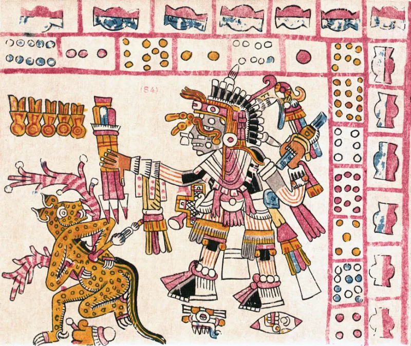

Isaiah edits land on words added in 1611
UnrefutedNo good counter-argument has been published by LDS scholars.
The evidence
What to look at first
Open a King James Bible. Some words are printed in italics.
Those are words the 1611 translators added to make the English read smoothly. They are not in the Hebrew.
Why that matters here
Nobody translating from ancient gold plates could know which English words a 1611 committee had added. Those words exist only in that one edition.
What the Book of Mormon does
It quotes long stretches of Isaiah. Where its wording differs from the King James, the changes cluster on exactly those italic words.
David Wright counted it: between 22% and 38% of the differences land there. And about 40% of the italic words are simply dropped.
Their answer, at full strength
Stan Spencer of the Interpreter Foundation accepts the pattern. He argues Joseph Smith could see the italics on the page, treated them as suspect, and revised around them while dictating.
That is a real answer, and it fits the data.
But notice what it concedes
It concedes he was working from a King James Bible. That is the whole point at issue.
What to say
"Why would a translation from gold plates track the italics of one English edition?"



How they answer this — at its strongest
Stan Spencer says Joseph saw the italics and revised the weakest words on purpose.
Stan Spencer, of the Interpreter Foundation, accepts the pattern. He argues that Joseph Smith could see the italics on the page. An untrained reader would treat them as the weakest part of the verse. So Joseph revised around them as he dictated.
On that view a revealed translation would land on exactly those words. FAIR argues much the same. The italic words really were the softer text. A prophetic revision would be expected to correct there first.
The verdict
Strong for you: both sides now agree the changes cluster on 1611's added words.
Both sides now agree on the fact. The changes cluster on the italics. Those are a printing feature of one English Bible from 1611. That is no longer in dispute.
What the defence offers is a reframe, not a denial. And the reframe grants the thing that matters. He was working from a King James Bible.
One problem is left over. In several places, dropping the italic word hurts the sense against the Hebrew. A revision guided by God would not be expected to do that.
Sources
- David P. Wright, 'Isaiah in the Book of Mormon: Or Joseph Smith in Isaiah' (American Apocrypha, 2002)
- Dialogue: 'Joseph Smith's Interpretation of Isaiah in the Book of Mormon'